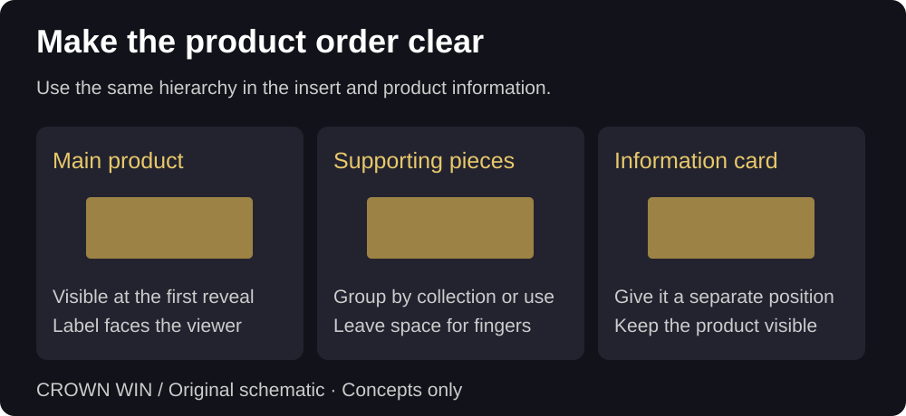
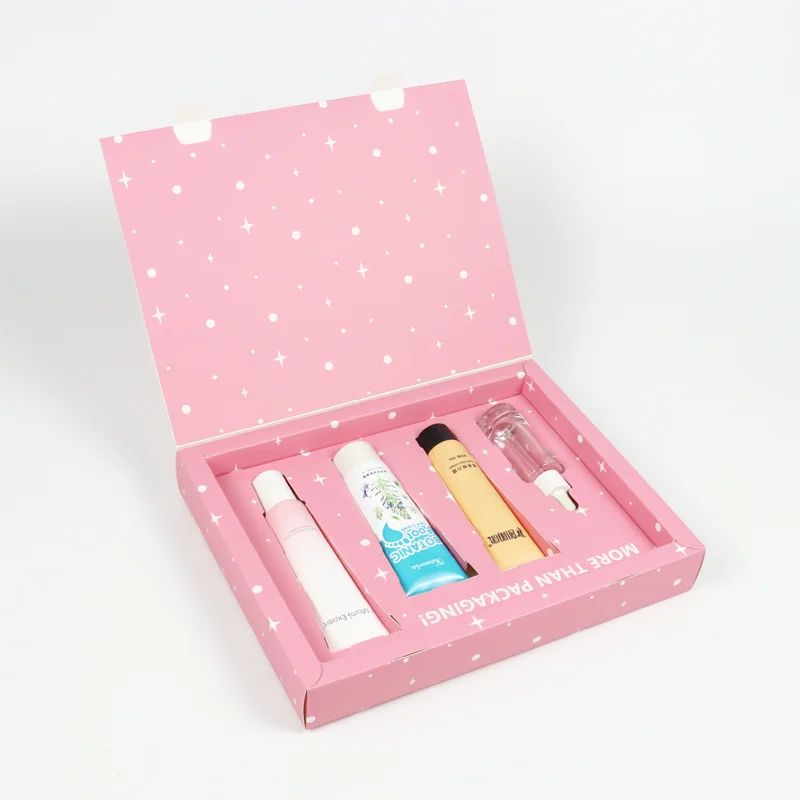
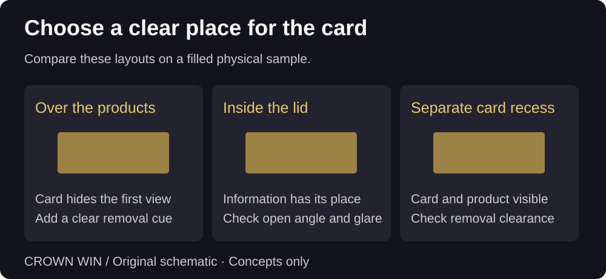
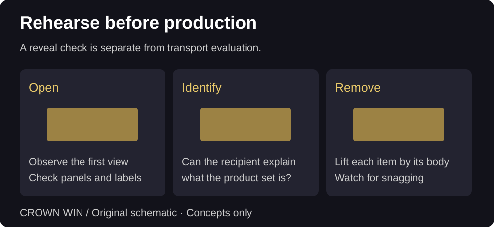

Custom PR Box Design
Put the Product First
Plan custom PR boxes for product launches. Compare gift box styles, product layouts, sizing and information cards, then prepare a clear supplier brief.
Quick answer: Design a PR gift box around the product reveal: identify the main product, give supporting pieces and information a clear place, and rehearse the complete opening with actual samples. A memorable box is useful only if the recipient can understand and handle what is inside.
What is a PR box, and who is this guide for?
A PR box is a package sent by a brand to introduce products to creators, editors or other selected recipients. A PR gift box combines that sampling purpose with a gift-style presentation. This guide is for brands planning custom PR boxes for influencers or product launches. It needs to make the product easy to identify, understand and remove. Start by choosing one main product, the supporting pieces and the message the recipient should understand after opening. Treat a possible unboxing video as a use case to test, not a guaranteed result.
What do Reddit discussions tell us?
In a BeautyGuruChatter discussion, commenters disagreed about elaborate PR packs: some saw attention-getting presentation, while others questioned the materials and what recipients would do with the box afterward. In another discussion, a large package drew comments that the product itself was being overshadowed. These are individual opinions, not campaign results or a consumer survey. They suggest a useful review question: does each layer help the recipient understand the product?
Plan the first view before choosing the box
Place the main product where it can be seen without removing a stack of cards or decorative filler. Group supporting items by a clear relationship, such as one routine or one collection, rather than filling every available space. Check that labels face the intended viewing direction. Space to grip a bottle or lift a jar is part of the layout, not wasted area.
Try a top-down view and a seated opening at a table. If the lid hides the product or the recipient must hold the box open with both hands, revise the opening or layout. Do not enlarge the box solely to fit more decoration.


PR box design ideas: which opening style fits your product?
Hinged or magnetic flap: evaluate a single reveal of the whole set. Check the open angle, product visibility and whether the lid stays comfortably open.
Double-door box: the opening can frame a central product. Check where fingers rest while both panels move and whether a card would interrupt the reveal.
Drawer box: a sliding tray can introduce products in stages. Check the pull, friction and whether the tray remains supported when opened. Compare all options with the same products and message before judging visual impact or cost.
Product reference: Whole-set reveal
This catalogue layout shows several products together. For a PR application, test which item reads as the main product and where a separate information card can sit. The photograph does not show a PR campaign or its results.

Product reference: Central product reveal
The two panels frame one bottle. A similar opening could suit a single-product introduction; test hand positions and where the card goes without covering the bottle.

Product reference: Staged reveal
This empty drawer format offers a reference for a sliding reveal. The PR insert, product fit and any card layer would need to be developed and sampled separately.

Where should the information card go?
Keep the card useful and brief: identify the product or collection, explain the intended use in approved wording, and provide a clear contact or resource link. Put a card pocket inside the lid, reserve a separate recess, or add a lift tab if the card must sit above the products. Check that a recipient can tell which piece to remove first.
Keep the PR presentation distinct from the customer retail pack. If the special box is not included with a purchase, make that clear in the campaign information. Give brand-approved product information without assuming the recipient will post, and keep any campaign agreement separate from the packaging brief.


Rehearse the complete unboxing sample
Pack the actual products, insert, card and final outer wrap. Ask someone unfamiliar with the design to open it without instructions. Note the first product they see, whether they recognise the collection, what blocks their view and whether removal requires pulling on a cap or label.
Repeat the opening using the intended camera position. Check glare on key lettering, lid obstruction and the space needed on the table. Then repack it using a written component list and time the assembly steps. Agree sample acceptance criteria before production. For parcel delivery, evaluate the complete shipping pack separately; a presentation test does not prove transport protection.


How do you choose PR box sizes?
Start with the actual products in their intended orientation, including any retail packs that will stay inside. Lay out the main product, supporting items and card at full scale, then allow room for the insert, fingers and the opening mechanism. Ask the supplier to distinguish usable internal dimensions from finished external dimensions. There is no universal PR box size: the contents and structure determine the fit.
For makeup PR boxes, compare a single hero product with a coordinated launch set. A bottle-and-tube collection may need different recess depths so the labels remain visible together. For a single cosmetic bottle, a central reveal may be clearer than a large empty surround. These are layout ideas to prototype, not evidence of campaign performance. Confirm the complete filled sample and outer shipping carton before approving production.
How to brief a custom PR box supplier
Send the product list, dimensions, weights and representative samples; identify the main product, opening order, card size and intended photography view. Include quantity, destination and the required arrival date. Ask which parts are included in the quote: box, insert, printing, card, assembly and outer transport packaging. For shipping layers, see our gift box and outer carton guide.
Frequently asked questions
Does a PR box have to be bigger than a retail box?
No. Set the size around product fit, removal space and the planned presentation. Extra volume needs a purpose.
Can a retail box be used for PR?
It can be a starting point if it supports the message and complete product set. Compare a card or sleeve with a new structure before choosing.
Will an elaborate box guarantee coverage?
No. Packaging does not establish that a recipient will publish content or that a campaign will generate sales.
Research scope: Public Reddit opinions inform the questions above, not consumer statistics or measured campaign outcomes. Catalogue photographs show box formats; PR applications are proposed.
Start with the product reveal.
Share products, quantities, opening ideas and the target arrival date to discuss a sample.
→ Request a Custom Quote